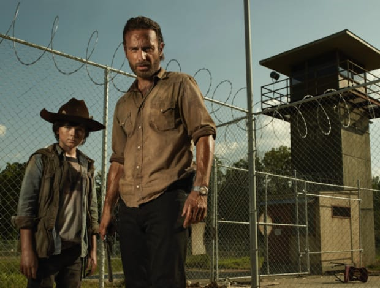

The Walking Dead takes place after the onset of a worldwide zombie apocalypse. The zombies, colloquially referred to as "walkers", shamble towards living humans and other creatures to eat them (they are attracted to noise i.e. gunshot and to different scents i.e. humans). Humans they bite or scratch become infected and slowly turn into walkers as well. It is revealed early in the series that all living humans carry this pathogen, so that if they die from any other cause, they will also turn into walkers. The only way to permanently kill a walker is to damage its brain or otherwise fully destroy the body, such as by cremating it.
The series centers on sheriff's deputy Rick Grimes, who wakes up from a coma to discover this apocalypse. He becomes the leader of a group of survivors from the Atlanta, Georgia region as they attempt to sustain themselves and protect themselves not only against attacks by walkers but by other groups of survivors willing to assure their longevity by any means necessary.
Rick, while on his sheriff's patrol duty with his partner Shane Walsh, is injured and falls into a coma. He awakens some time after the apocalypse and meets survivor Morgan Jones, who explains the dangers of walkers. Rick travels to Atlanta, Georgia, in search of his family only to find that city has been overrun by walkers. Rescued by Glenn Rhee, Rick is eventually introduced to the rest of Glenn's group, who are camping a few miles outside of the city. There, he discovers that his wife Lori and son Carl have been living with Shane. The two policemen employ different approaches to keep the peace: Rick returns to Atlanta for supplies and to retrieve a man left behind, while Shane exerts his authority over the camp.
When the camp is overrun by walkers, Rick and Shane convince most of the survivors to head for the Centers for Disease Control (CDC) in Atlanta. They briefly shelter with the only remaining CDC staff member, who has been unable to develop a cure, before a protocol incinerates the facility.
While scavenging supplies along a highway, Carol Peletier's daughter, Sophia, is pursued by a walker and separated from the group, and Carl is accidentally shot, forcing the survivors to stay on the nearby farm of veterinarian Hershel Greene. Hershel saves Carl's life, and in the group's attempt to co-exist with Hershel's family, secrets and disagreements lead to rising tensions. In addition, Rick learns of Lori's former affair with Shane and her newfound pregnancy, creating a rift between Rick and Shane.

A hidden collection of walkers – mainly friends and family of Hershel's but including Carol's missing daughter (which is unknown by Hershel) – is discovered in a barn and eventually released by an agitated Shane, who compels the group to eliminate the threat. Shortly thereafter, an encounter with a hostile group of survivors results in a shootout and the torture of a prisoner as they react to the new threat. Shane unilaterally decides to kill the prisoner without the group's knowledge. In an attempt to take over leadership, an unhinged Shane lures Rick away to murder him but is himself killed. The gunshots attract a horde of walkers who overrun the farm, forcing the group to scatter and regroup. Rick's leadership is questioned but solidified, and he reveals what he learned at the CDC: everyone is infected and will reanimate after death even if they aren't bitten by a walker.
After spending several months fleeing remnants of the herd, the survivors make a new home in a prison infested with walkers but find greater danger from the treachery of two rescued convicts. In the process of clearing the prison, Maggie Greene is forced to perform a fatal Caesarean section on Lori to save her baby, and Rick becomes withdrawn and hallucinates visions of Lori and others who died. Meanwhile, Andrea and Michonne – who rescued Andrea near Hershel's farm – are discovered by Merle Dixon and taken to the town of Woodbury, which is led by a man known as The Governor. Michonne is distrustful and escapes to the prison, where she meets Rick's group and guides them on a rescue mission following Glenn and Maggie's capture. There are casualties on both sides, and The Governor, disfigured by Michonne, declares the prison group terrorists and Merle a traitor.
Reunited with his brother, Daryl Dixon briefly leaves the group with Merle before deciding his place is at the prison. Rick returns to his hometown to gather weapons and ammunition, and reconsiders his morality when confronted by an unhinged Morgan. Andrea, romantically involved with The Governor, convinces him to negotiate a truce with Rick; secretly, The Governor plans an ambush, and Merle thwarts it at the cost of his life. Andrea flees Woodbury but is captured by The Governor, who locks her in a room with a walker and launches a full-scale attack on the seemingly-abandoned prison. His army is ambushed by Rick's group, and The Governor massacres his own people for refusing to fight. The Governor escapes, and Rick's group returns to Woodbury to take in the survivors but are too late to save Andrea
Several months have passed, and the prison community has grown when a deadly flu-like infection spreads among the population, killing residents, who reanimate as walkers. Carol is banished for murdering two sick residents. Baited walkers breach the prison fence and are barely contained when a scavenging detail returns with medicine. Elsewhere, The Governor encounters the Chambler family, and together they all join another group of survivors led by The Governor's former right-hand man from Woodbury, Martinez. The Governor murders Martinez and takes charge of the group, honing them into a fighting force he turns on the plague-weakened prison. Rick offers to share the prison, but The Governor ignites hostilities by executing Hershel. The Governor is ultimately killed, but the prison is overrun by walkers, and Rick's group is scattered.
Separated into small groups, the survivors discover signs along railway lines advertising sanctuary at Terminus. Glenn and Tara Chambler join with a group of survivors escorting Eugene Porter – who claims to know how to stop the walkers (the cure) – to Washington, D.C. They reunite with Maggie and are the first to reach Terminus. Carol aids a pair of troubled sisters she secretly taught to use weapons, and after one commits sororicide, Carol is forced to execute her. Beth Greene is kidnapped away from Daryl, and he falls in with a gang that later reveal they have a vendetta against Rick; Daryl sides with Rick, Carl, and Michonne to defeat them, then push on to reach Terminus. Those who arrive are initially welcomed by the Terminus residents but the new arrivals are ultimately forced to disarm and are locked inside a railway boxcar.
Rick's group learn the residents of Terminus engage in cannibalism, luring in victims under the guise of offering sanctuary. Carol uses firearms and walkers to attack Terminus, enabling the others to escape. Reunited, they soon encounter Gareth and a small band of Terminus survivors who attempt to terrorize and prey upon Rick's group, but are outmatched and killed. Abraham Ford and Rosita Espinosa continue their mission to get Eugene to Washington, D.C., joined by Glenn, Maggie, and Tara. After facing a number of setbacks, Eugene admits that he fabricated the story about a cure in order to receive protection. Meanwhile, Daryl and Carol follow a marked car to Atlanta, where Beth has been held in a nearby hospital ruled by morally-compromised police officers. Carol is taken, and Daryl recruits the rest of his group to help. They capture several police officers to make a trade, but a brief standoff ends in Beth's death.
The reunited group continues toward Washington, D.C. and is approached by Aaron, who offers them shelter at the Alexandria Safe Zone, a fortified suburban community led by Deanna Monroe. Feeling the sheltered residents wouldn't be able to survive against walkers or hardened survivors, Rick and Carol consider forcefully taking over the community, while others of their group begin assuming leadership roles. A series of confrontations frightens residents, and during a meeting deciding Rick's fate he executes a prominent resident who accidentally killed Deanna's husband. Rick's friend Morgan arrives and witnesses the execution.